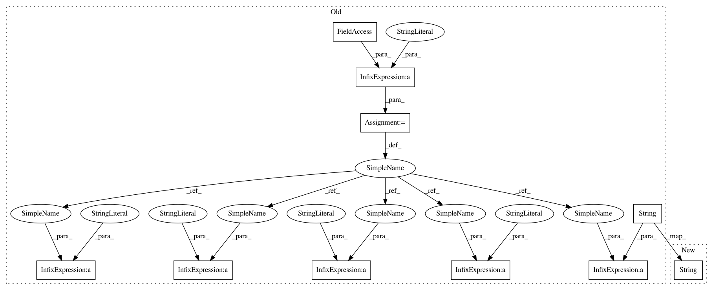

57bab830cc3daa5432105ec546fd0e87ab00fbdb,plantcv/plantcv/analyze_thermal_values.py,,analyze_thermal_values,#,13
Before Change
avgtemp = np.average(masked_thermal)
mediantemp = np.median(masked_thermal)
prefix = label + "_"
// Store data into outputs class
outputs.add_observation(variable=prefix + "max_temp", trait="maximum temperature",
method="plantcv.plantcv.analyze_thermal_values", scale="degrees", datatype=float,
value=maxtemp, label="degrees")
outputs.add_observation(variable=prefix + "min_temp", trait="minimum temperature",
method="plantcv.plantcv.analyze_thermal_values", scale="degrees", datatype=float,
value=mintemp, label="degrees")
outputs.add_observation(variable=prefix + "mean_temp", trait="mean temperature",
method="plantcv.plantcv.analyze_thermal_values", scale="degrees", datatype=float,
value=avgtemp, label="degrees")
outputs.add_observation(variable=prefix + "median_temp", trait="median temperature",
method="plantcv.plantcv.analyze_thermal_values", scale="degrees", datatype=float,
value=mediantemp, label="degrees")
outputs.add_observation(variable=prefix + "thermal_frequencies", trait="thermal frequencies",
method="plantcv.plantcv.analyze_thermal_values", scale="frequency", datatype=list,
value=hist_percent, label=bin_labels)
analysis_img = None
if histplot is True:
params.device += 1
dataset = pd.DataFrame({"Temperature C": bin_labels,
"Proportion of pixels (%)": hist_percent})
fig_hist = (ggplot(data=dataset,
mapping=aes(x="Temperature C",
y="Proportion of pixels (%)"))
+ geom_line(color="green"))
analysis_img = fig_hist
if params.debug == "print":
fig_hist.save(os.path.join(params.debug_outdir, str(params.device) + prefix + "_therm_histogram.png"),
verbose=False)
elif params.debug == "plot":
print(fig_hist)
After Change
analysis_img = fig_hist
if params.debug == "print":
fig_hist.save(os.path.join(params.debug_outdir, str(params.device) + "_therm_histogram.png"), verbose=False)
elif params.debug == "plot":
print(fig_hist)
In pattern: SUPERPATTERN
Frequency: 4
Non-data size: 10
Instances
Project Name: danforthcenter/plantcv
Commit Name: 57bab830cc3daa5432105ec546fd0e87ab00fbdb
Time: 2021-02-11
Author: noahfahlgren@gmail.com
File Name: plantcv/plantcv/analyze_thermal_values.py
Class Name:
Method Name: analyze_thermal_values
Project Name: danforthcenter/plantcv
Commit Name: 57bab830cc3daa5432105ec546fd0e87ab00fbdb
Time: 2021-02-11
Author: noahfahlgren@gmail.com
File Name: plantcv/plantcv/report_size_marker_area.py
Class Name:
Method Name: report_size_marker_area
Project Name: danforthcenter/plantcv
Commit Name: 57bab830cc3daa5432105ec546fd0e87ab00fbdb
Time: 2021-02-11
Author: noahfahlgren@gmail.com
File Name: plantcv/plantcv/analyze_thermal_values.py
Class Name:
Method Name: analyze_thermal_values
Project Name: danforthcenter/plantcv
Commit Name: 57bab830cc3daa5432105ec546fd0e87ab00fbdb
Time: 2021-02-11
Author: noahfahlgren@gmail.com
File Name: plantcv/plantcv/photosynthesis/analyze_fvfm.py
Class Name:
Method Name: analyze_fvfm
Project Name: danforthcenter/plantcv
Commit Name: 57bab830cc3daa5432105ec546fd0e87ab00fbdb
Time: 2021-02-11
Author: noahfahlgren@gmail.com
File Name: plantcv/plantcv/hyperspectral/analyze_index.py
Class Name:
Method Name: analyze_index